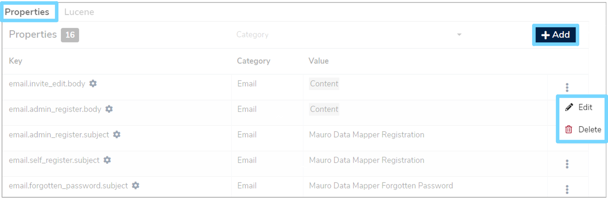
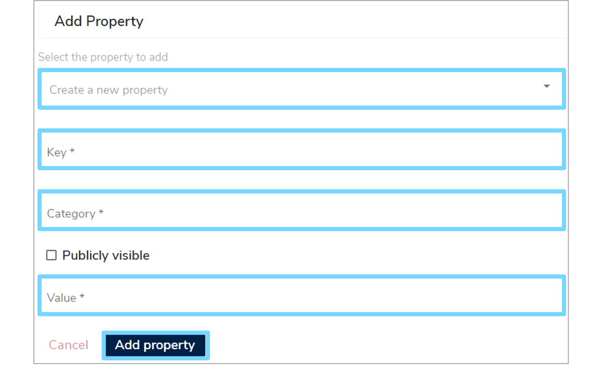
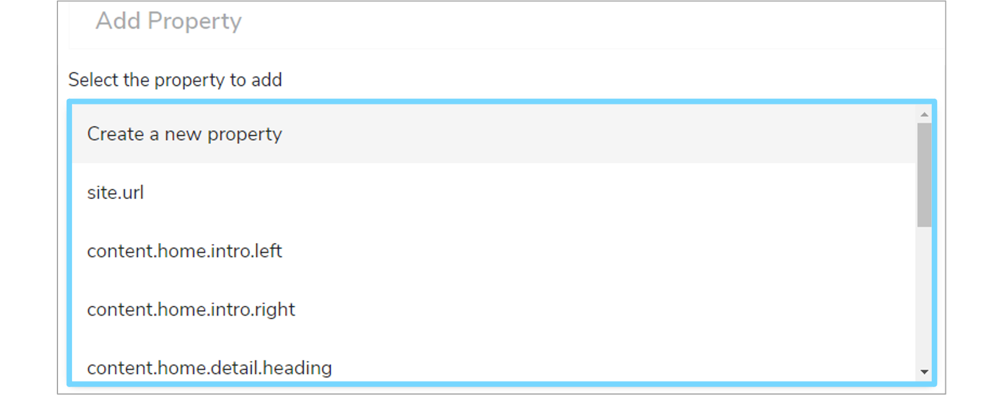
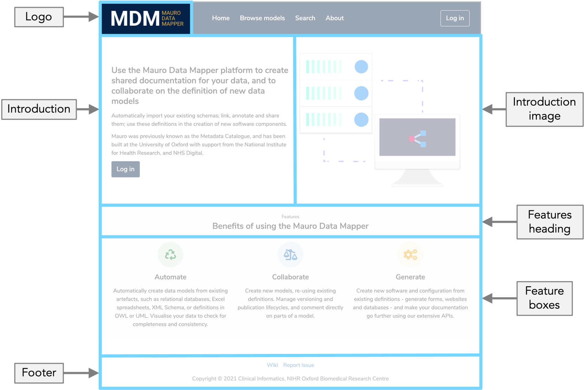

Branding
Introduction¶
The Mauro Data Mapper Web interface can be customised to match an organisation's brand or styling. Creating a new theme requires developer effort, the steps of which are detailed below.
Angular Material¶
The Angular Material framework, which the UI uses for layout and controls, can support multiple themes (colour palettes and typography) as well as dynamic switching of themes. However, the themes must be precompiled into the application as part of the stylesheets for the site. This means that themes must be prepared by a developer.
See also:
Themes¶
Overview¶
Themes in Mauro Data Mapper are organised in the project by name, and uses folder and naming conventions to identify where files and CSS selectors are. The conventions used are:
- SASS files:
src/style/themes/{name}.scss - CSS theme class:
.{name}-theme - Asset files:
src/assets/themes/{name}/*.*
So, as an example, a custom theme called nhs-digital would be:
- SASS files:
src/style/themes/nhs-digital.scss - CSS theme class:
.nhs-digital-theme - Asset files:
src/assets/themes/nhs-digital/*.*
Switching Themes¶
To determine the theme to use for the site, update the src/environments/environment.ts:
1 2 3 4 5 | |
Note
If the theme name is not provided, this will fall back to default.
An alternative for switching the theme for production UI builds is to set an environment variable called MDM_UI_THEME_NAME. This allows the theme setting to be defined as part of a wider build process, such as creating a Docker image.
Importing Themes¶
Each theme requires a SASS file to define the colour palette and typography for the Angular Material theming system to use. This SASS file can also override any other CSS selectors that do not affect the Material controls.
The src/style/styles.scss file is the place to import all theme files. The key parts are:
1 2 3 4 5 6 7 8 9 10 11 12 13 14 | |
Note
Remember that Angular Material requires all themes to be precompiled, so all SASS files must be imported to include them as options. Only one theme will appear at a time though.
Creating Themes¶
To create a new theme it is advised to copy src/style/themes/default.scss and make the necessary adjustments. Then @import the new theme file
in src/style/styles.scss.
The specifics of the Angular Material theme system should be referenced for better explanation. However, in summary, you will need to define:
- The colour palettes required to represent:
- Primary colours
- Accented colours
- Warning colours
- The typography settings to use for text/font
The Material mixins should then be included within a top-level CSS selector named after the theme. This CSS selector will be applied to the body of the HTML page and therefore affect all DOM elements below it.
The theme file should effectively include the following steps:
1 2 3 4 5 6 7 8 9 10 11 12 13 14 15 16 17 18 19 20 21 22 23 24 25 26 27 28 29 30 31 32 33 34 35 36 | |
Assets¶
Themeable assets, such as logos and images, should be stored under src/assets/themes under the specific sub-folder named after the theme. The file
names used should be consistent across all themes e.g. logo.png.
To consistently reference the correct asset path to use, the ThemingService can be injected into your component/service and use the getAssetPath()
function to get the correct path for an asset according to the current theme.
Edit page content¶
Some of the static content may be adjusted by an administrator to allow the end users to make content edits instead of relying on developers. Follow the steps below to edit page content.
Sign in and click the white arrow by your user profile on the right of the menu header. Select 'Configuration' from the dropdown menu.

Click the 'Properties' tab to view a list of properties, with the cog icon indicating a system property.

To edit or delete a property, click the three vetical dots to the right of the relevant row and choose either 'Edit' or 'Delete' from the dropdown menu.
To add a new property click the '+Add' button at the top right of the page which will take you to an 'Add Property' form.

Firstly, select a property you want to add from the dropdown menu. 
Then enter a 'Key', 'Category' and 'Value'. Tick the 'Publicly visible' box if it applies. Once the form is completed, click 'Add property' and a green notifciaiton box should appear at the bottom right of your screen, confirming the changes.
Note
It may be necessary to manually adjust the HTML source to set correct styling/markup for the content. This can be done by clicking on the `` 'Change Mode' toolbar button in each form edit field.
There are configuration properties available to modify the following:
- Homepage
- Logo
- Footer
Home Page¶
The homepage of Mauro Data Mapper displays a summary of the tool as well as the most important links to help users easily navigate to the main sections. The homepage can be modified to include custom content to suit your organisation.
The homepage is split into two columns and four main sections which can each be modified.

Note
It is recommended to include correct HTML source and styling in these sections.
-
Introduction -
content.home.intro.left
This is usually some introduction text on the left column of the starting page -
Introduction image -
content.home.intro.right
This is usually an image or illustration on the right column of the starting page that compliments the introduction text -
Features heading -
content.home.detail.heading
This is usually a heading for the 'Features' section underneath the introduction -
Feature boxes -
content.home.detail.column1 - 3
These are three feature boxes that usually appear in the 'Features' section underneath the introduction
Logo¶
A static asset should also be provided for the logo in the navbar component as a default, however an image URL may also be provided if the logo is
hosted in another location e.g. CDN. To set a logo, modify the theme.logo.url property.
The theme.logo.width property is also provided to adjust the size of the logo in the space provided. Note that:
- The value entered for
theme.logo.widthmust be supported by CSS e.g.20px,1.2em, etc - The maximum width of the logo is
120px. If the image is larger than this then it will be scaled down to fit
Footer¶
The copyright notice can be altered in the footer by changing the content.footer.copyright property.
Defaults¶
If no property values are provided for the above, then suitable defaults are used instead based on the current theme. To revert back to default values for any property, simply delete the property from the configuration table.